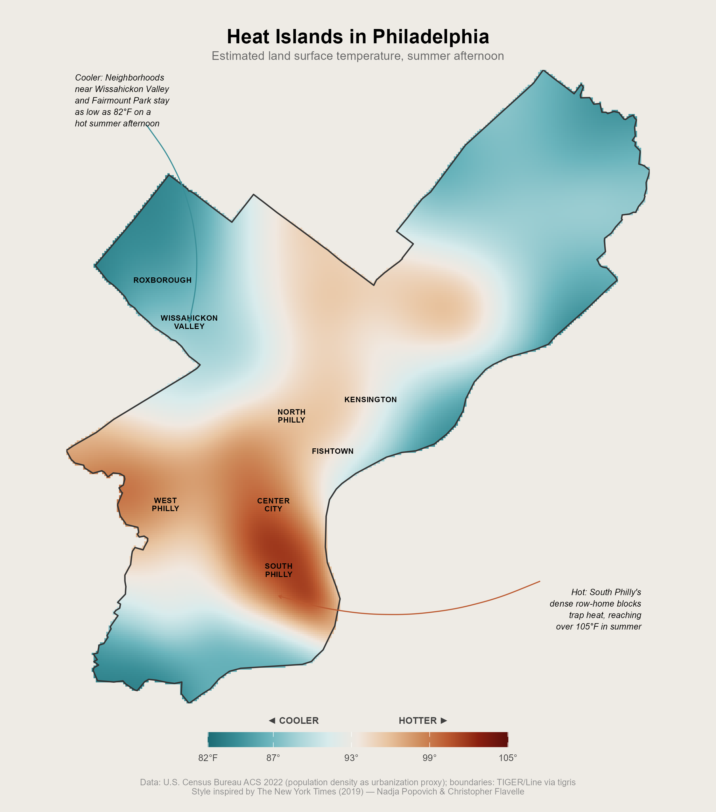
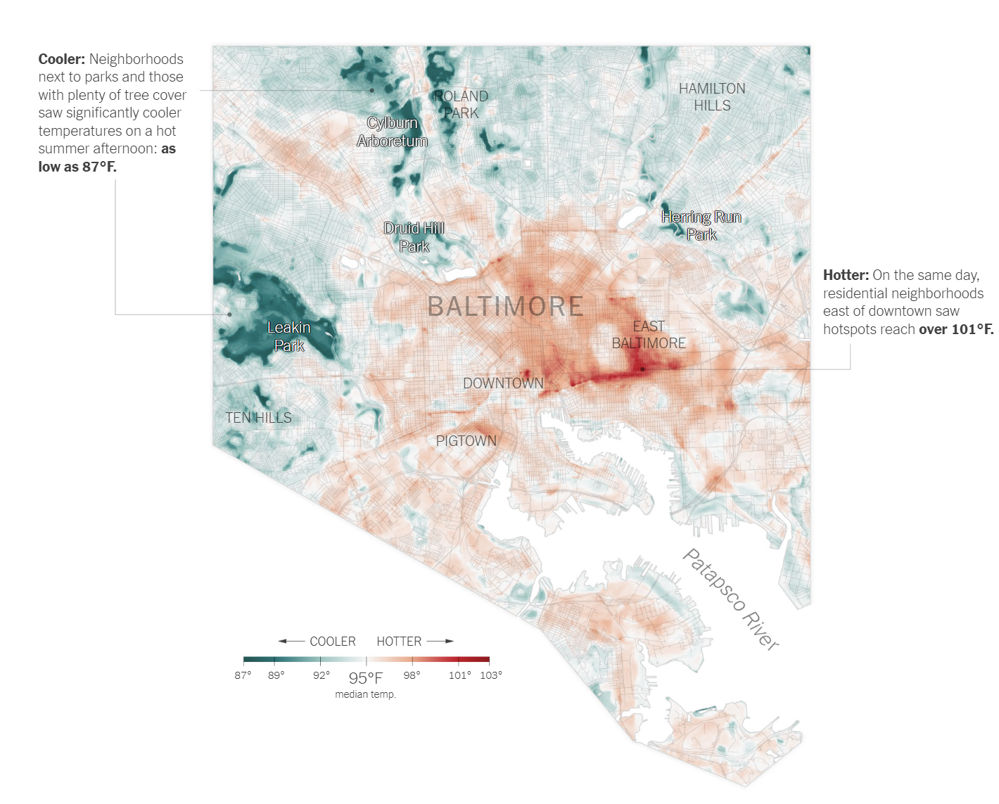

Plate I · A copy, on purpose
Heat Islands in Philadelphia
The Times mapped Baltimore in 2019. I rebuilt it for Philadelphia to see how much of what works is craft and how much is data. Mostly craft.
- Shows
- Surface heat, one summer afternoon
- Data
- ACS 2022, TIGER/Line
- Color
- Teal to rust, neutral at 93°F
- Made in
- R


What I kept
- A diverging ramp with a real middle.
- Two annotations, each ending in a temperature.
- Neighborhood names on the map, small, in caps.
- No basemap, no north arrow, no scale bar.
What I could not match
- Theirs is satellite heat. Mine is a density proxy.
- They draw the street grid inside the surface.
- Their labels were placed by hand, and it shows.
- Theirs sits in a city. Mine floats on the page.
My first try used a plain ramp and the whole city looked warm. True, and empty. A diverging scale makes you say what counts as normal.
Then the parks and the row homes pulled apart on their own. Twenty degrees, one afternoon, two blocks.